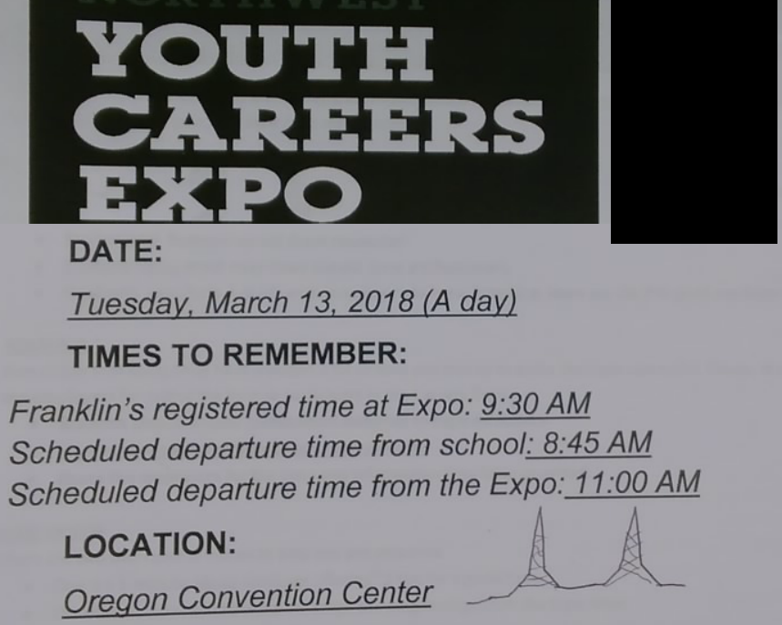

The annual LatinX Tech Fest helps students interested in STEAM careers. We help fix low representation of diverse professionals working in the Technology Industry. Professionals and college students help high school students engage companies looking for diverse talent and experienced professionals working in the industry. Sat, March 14, 2020 , 9:30 AM – 4:30 PM PDT https://www.eventbrite.com/e/hispanicpros-4th-annual-latinx-tech-fest-tickets-65573753863
OMSI Teen center and teen tech nights. Feb 21
https://omsi.edu/ttc#nodeid-10658
FTC Robotics students invited!
Calling all FRC and FTC students in the PNW region! The 2019 Synthesis summer internship, sponsored by Autodesk, is now accepting applications! Work together with a team of high school FIRST robotics students and alumni over the course of the summer for 10 weeks on Synthesis, a virtual robotics simulator for FIRST robotics teams to export their robot CAD models through Autodesk products and then test their designs with driver practice, robot code emulation, strategy, and more.
We are seeking students with a variety of backgrounds including but not limited to software developers, management, CAD experience, marketing, and more. This summer work experience is a paid internship and a wonderful way to meet other FIRST robotics students! Applications are due by midnight on April 30th. Visit our website at
synthesis.autodesk.com
synthesis.autodesk.com for more details or contact us at FRC@autodesk.com.
Kira Corbett
College Software Developer Intern
Synthesis: An Autodesk Technology
www.synthesis.autodesk.com
AWS Elemental Career Day
Visit the amazing offices of one of the city's leading software companies with the nonprofit Portland Workforce Alliance! This company was co-founded by a former Oregon student and purchased by Amazon. See the technology powering videos used by companies such as ESPN, Comcast, & Major League Baseball. Explore the diversity of jobs within a fast-growing tech company. Participate in a fun Hour of Code coding activity, mentored by AWS Elemental Employees. (Accessible to all experience levels.) Learn about the education and skills needed for a successful tech career.
Date: Wednesday, February 13, 2019
Time: 1:00 PM - 4:00 PM - Check in 12:45 PM
Location: AWS Elemental - 1320 SW Broadway, Suite 400
Transportation: Students will need to find their own transportation
Meals: None provided
Two part registration:
1) Students must register online HERE
https://docs.google.com/forms/d/e/1FAIpQLScnAfEcXQFMItK7e-SiIDQzZ4-D8Ba2s_licQ03IcSy-g4QAA/viewform
2) Stop by the Career Center (SS-216) and pick up a paper permission slip.
Martin Rodriguez
Franklin High School Career Coordinator He/Him/His
P: 503-916-5140 ext. 84315 mrodriguez5@pps.net
Coding camp at Portland state Coding Camp at PSU - 9am 3pm - for 3 weeks
http://nwapw.org/faq/
How much does the program cost?
The program is completely free of charge.
When does the program run?
Mon-Friday July 16th to August 10th - 9:00 until 3:00 with a break for lunch.
There will also be two meetings, one in late April and another in mid May where we will select the projects for this year.
Where does the program take place?
The Computer Science department at Portland State University. Downtown Portland just off the Green and Orange Max lines, also near the bus mall. It's just a 20 to 45 minute trip from anywhere in Portland on TriMet
Mr. Rowe or any teacher nominates you. There is no forms to fill out. Just ask Mr. Rowe to send in your name. NWAPW is an intensive three week program for students who are highly motivated in coding and computer science and want to work with other students in Portland High Schools who crave more than just High School coding lessons.

FreeGeek is now giving away laptops to volunteers who donate 24 or more hours of service! Full size desktops are also available. If students wish to build a high end desktop they can join the build program. Build six computers, keep the last. The build program can take 24-48 hours.
•Students 17 or 16 years old must have a guardain sign. Print this form
Click here
and sign. They can volunteer alone.
• Students 15 and under can not volunteer alone. They must be "accompanied by a responsible adult". Print this form
Click here
and sign.
Everyone of all ages must do these 2 steps below
1) Apply online for a laptop on this URL below
https://www.freegeek.org/community-programs/plug-portland
2) Print and fill out the volunteer form, Volunteer form below
https://drive.google.com/file/d/14WRiP7t5xIP7UAzUl50cluKoW6kPliRe/view?usp=sharing
In the past FreeGeek was only able to offer desktop computers to students and individuals. Freegeek has new refurbishing software, PCs for People. They are also receiving more corporate donations. They now we have laptops—or Freektops, as they affectionately called.
Spend one day as an engineer
http://www.oregonengineersweek.org/
Engineers Week High School Program is an 8hr long event where students interested in Science, Technology, Engineering, or Math (STEM) get to attend an exhibit hall, banquet, and go on a tour. Some of the tour options include Boeing, DWFritz, Micro Systems Engineering, Collins Aerospace, and more! Get the opportunity to chat one on one with Professional Engineers.
Date: Wednesday February 20, 2019
Time: 12:30pm - 8:30pm
Where: DoubleTree Hotel in Portland, OR
Deadline to register is Friday, February 8th! To register click HERE! Once on the website, click "E-week Banquet & Field Trip Program" under the "Registration" tab. You'll need to enter this password "EWEEK2019"
Scholarship opportunity on behalf of the American Society of Civil Engineers: Younger Member Forum (ASCE: YMF)!!! YMF is offering a $500 scholarship to high school juniors or seniors in Oregon or SW Washington who are interested in engineering, which will be awarded at the E-week Banquet! Please submit your application before February 8th!
Scholarship Application: CLICK HERE!
https://docs.google.com/forms/d/e/1FAIpQLSctdrkjo4de87RYBdeckiIeSIqSKclzLMGxIEmWjQ_vMFE8ow/viewform
A free 8 week class through FHS SUN taught by a Portland State University Practicum student for adults wanting to learn and practice English. Beginner level.
Winter Session:
January 15 - March 7, 2019
Tuesdays & Thursdays
5:30pm-7:30pm
Franklin High School Room M126
(5405 SE Woodward St)
Register for the class:
https://docs.google.com/forms/d/e/1FAIpQLSduDSEYuUpHRgxq8wseRCPStHjqrIN4n5VG13BWqDAE6dP00g/viewform
Flyers for the class in many languages:
https://docs.google.com/document/d/1MKvjPw61d0sutPkdzgi63qe6JiO2hTVnTxhIZ4xS1Do/edit
Friday May 17th. Sign up early as this goes fast... Frankin Teacher Ms York will take up to 25 Franklin young women to a special field trip called "Women In Trades".
You must do two things:
============================
a) Fill out the paper field trip from Ms. York in room M-234 and room m-236
b) Fill out the google form below
https://docs.google.com/forms/d/e/1FAIpQLSe6KrhtKnS5_bNXWVX_VkWbpB9CBEQE_UUA1-NbNXfzlHE4Bw/viewform
More info here on the WIT website
http://www.tradeswomen.net/fair/
ACE Mentor Program ( Click here)
Architecture A
Construction C
Engineering E
Grades 11 and 12.
About ACE
ACE is a FREE after-school mentorship program that gives high school juniors and seniors the opportunity to work with professionals in the Architecture, Construction, and Engineering (ACE) career fields.
Students can:
Visit multiple company offices in downtown Portland, explore careers within the design and construction industry, and learn valuable job skills. Collaborate with a team of mentors and students from other schools on a building design project. Gain public speaking skills with a team while "pitching" their projects to a large audience at the program finale. Seniors in the program can also apply for ACE Scholarships! Last year $80,000 was awarded to 16 seniors who will pursue ACE-related majors in college. The program runs from January to May 2019. ACE is open to high school juniors and seniors. Outstanding sophomores are occasionally accepted if space is available. The application period opens at the beginning of the school year in fall. Students must submit BOTH the Online and Paper Applications before the November 16 deadline. Late applications will not be considered.
To Apply
Please see the attached ACE student flyer, calendar, FAQ, and paper application. Details about the new online application are on the last page of the attached paper application.
*APPLICATION DEADLINE: NOVEMBER 16, 2018 AT 5:00 PM*
We highly encourage students to apply early, since the 2-part application can take some time to complete.Applications are available on our website:
For applications and more info,
visit ACE Portland's website at
http://www.acementor.org/portland-or
Students need to complete BOTH the paper application and online application before the application deadline, so start early!
For questions, please contact the ACE Staff at
ace@portlandworkforcealliance.org
Multnomah County IT + Network Security Career Day
Learn about IT and Network Security careers at Multnomah County!
Go behind the scenes in local government, where core tech responsibilities include managing sensitive information, fending off hackers and developing handy custom apps for citizens and customers. Talk to Portland professionals in IT and network security about a career path that blends tech savvy with public service.
DATE: Wednesday, November 07, 2018
TIME: 9:00 AM - 12 NOON Check-In starts at 8:45AM
LOCATION: Multnomah County headquarters, 501 SE Hawthorne Blvd
TRANSPORTATION: Students are responsible for their own transportation to and from Multnomah County headquarters
MEALS: Light breakfast and pizza lunch generously provided by county.
Open to 9th -12th graders.
There are two steps to complete the registration process for this career day:
1. Complete the online registration (link below)
ONLINE REGISTRATION
https://docs.google.com/forms/d/e/1FAIpQLScuf6swcfTggeTOGvuUmkTCz6QSAggiXzKQ2Q2_vtVsN08DXQ/viewform
2. Complete the paper application: Go to your College & Career Center to pick up the paper application and submit the signed/completed application to your Career Coordinator.
MERCY CORPS CAREER DAY
Spend the morning at Mercy Corps, an international humanitarian aid organization based in Portland. Mercy Corps specializes in community-based development projects in more than 40 countries around the world. International development work is not your run-of-the-mill career. The pace is fast, the intellectual demands rigorous, the passion intense.
Students will hear about Mercy Corps careers and departments, learn about community development practices, engage in team activities, and design a program.
DATE: November 08, 2018
TIME: 9:00AM - 1:30pm Check-In starts at 8:45AM
LOCATION: Mercy Corps Action Center (28 SW 1st Avenue, Portland)
TRANSPORTATION: Students are responsible for their own transportation to and from Mercy Corps headquarters
MEALS: This Career Day includes pizza lunch and light breakfast.
Open to 9th -12th graders.
There are two steps to complete the registration process for this career day:
1. Complete the online registration (link below)
ONLINE REGISTRATION
https://docs.google.com/forms/d/e/1FAIpQLSeNmAnN-yDrmKngf7fv96wgSKUO_P-_4mVEyMw1QcVDqQCPeA/viewform
2. Complete the paper application: Go to your College & Career Center to pick up the paper application and submit the signed/completed application to your Career Coordinator (room SS-216)
Come to room SS- 216 (above the Cafeteria) to pick up an application. Spaces for these career days are very limited. Don't miss out on these opportunities, register TODAY!
Hack for a Cause: Portland
Friday, October 19th - Saturday, October 20th
AT&T, First Tech Federal Credit Union and Technology Association of Oregon (TAO) are pleased to announce their first annual Hack for a Cause event in Portland October on 19th and 20th at Portland State University.
The event is a platform for the local tech community to offer their expertise to solve challenges in our community. Participants of various skills and backgrounds are invited to register, join a team, and compete to solve challenges for prizes and community contribution!
Register as a coder/hacker
register as a volunteer or business partner
My name is Sarah Riswick, and I’m a High School Communications Manager with ChickTech in Portland.
Our 2018-2019 program kicks-off with a two-day immersive tech weekend at Portland State University on November 10th and 11th. We will host up to 150 high school girls within the Portland Metro Region. Each participant will attend a technology related workshop and leave with a take-home item that they created. After the kickoff weekend, all participants will have the opportunity to attend subsequent events, mentoring, and internship opportunities throughout the school year.
ChickTech is a national nonprofit that engages women of all ages in the technology industry. We build communities, empower participants to see themselves as leaders, and provide networking and mentoring opportunities to create a better tech culture for all.
One of our key areas of focus is engaging high school girls in technology through our high school program. Through hands-on events, we seek to engage girls who would not otherwise have thought of themselves as technologists and who would benefit from hands-on activities, mentoring opportunities, and career exposure. They will participate in workshops, led by industry professionals, that include opportunities to learn code, design, robotics, VR (virtual reality), and much more.
We would like to include your students this year as participants. Could we ask you to share our program with your staff? I’ve included information about the program and our nomination process below. Our program has been successful in the Portland area due to dedicated educators and support from families and businesses alike. As partners, school educators are an instrumental part of ChickTech. We appreciate your willingness to help us serve the girls who need us the most.
Feel free to email me personally email me (below) or call my cell at 310-463-5188 with any questions about the ChickTech program or the nomination process. There is additional information about our high school program on our Portland website.
Thank you for your time and consideration!
Sincerely,
Sarah Riswick
High School Communications Manager, ChickTech Portland
sarah.riswick@chicktech.org
https://portland.chicktech.org
About the ChickTech High School Program:
ChickTech is a non-profit dedicated to getting more girls and women into technology related careers through hands-on events. Our High School program provides monthly tech workshops and mentorship from industry experts for girls in 9th-12th grade.
A crucial aspect of our program is finding young women who would not otherwise have thought of a career in tech. As educators, many of you have seen young women not reach their potential in STEM because they thought it was too difficult—or it wasn’t what they’ve seen women do. By asking educators to hand-select our participants, we are giving our participants a vote of confidence. People who know them, and their abilities, have nominated them for this exclusive opportunity! Our large events tend to fill up and have waiting lists, so we encourage you to get your list in ASAP to give your students the best chance of getting in.
Participants are girls, transgender, or non-binary students
Dream of having a career strategizing brand and product design?
Come tour Ziba, a design innovation consultancy with teams of designers, strategists, thinkers, and makers hired to research, design, prototype, produce and test physical and digital products. Get a behind-the-scenes look at one of Portland’s coolest design firms. Learn about the education and skills needed for a digital design career.
DATE: October 17 - OR - October 24, 2018
TIME: 9:00 AM - 11:30 AM Check-In starts at 8:45 AM
LOCATION: Ziba Headquarters - 1044 NW 9th Avenue, Portland. (Transportation is NOT provided for this career day. Students are responsible for their own transportation to and from ZIBA)
Open to 9th -12th graders. Applications are available in the Career Center.
There are two steps to complete the registration process for this career day:
1. Complete the online registration (link below) ONLINE REGISTRATION
https://docs.google.com/forms/d/e/1FAIpQLSfewfSyKD6NoEP5Pr_0JoQLYfVHx9UFVOmocMTxbMpxEYSm2g/viewform
2. Complete the paper application: Go to your College & Career Center to pick up the paper application and submit the signed/completed application to your Career Coordinator.
Spaces for these career days are very limited. Don't miss out on these opportunities, register TODAY!
ZGF Architects Career Day (September 27th):
Visit one of Portland's most respected architecture firms, ZGF Architects. This is an exciting opportunity to hear from architects and other industry professionals. Design a building in a team with students from other schools. Learn about the education and skills needed for an architecture career. Go on a walking tour to explore building styles in downtown Portland. If you are interested in Architecture, Landscape Architecture, Interior or Urban Design, this is your opportunity!
DATE: September 27th, 2018
TIME: 9:30 AM - 2:00 PM- Check-In starts at 9:00 AM
LOCATION:ZGF Architects, 1223 SW Washington St. #200
TRANSPORTATION: Students are responsible for their own transportation to and from ZGF Headquarters.
Open to 9th -12th graders. Applications are available in the Career Center.
There are two steps to complete the registration process for this career day:
1. Complete the online registration (link below)
ONLINE REGISTRATION
https://docs.google.com/forms/d/e/1FAIpQLSfmffPPnoamogwwvwtpv5EaG4gL9rAcBHDoatx2w9NK1hgU_g/viewform
2. Complete the paper application: Go to room SS-216 your College & Career Center to pick up the paper application and submit the signed/completed application to your Career Coordinator.
Portland Fire and Rescue Career Day
Do you want to save lives? Come join an action-packed Career Day at Portland Fire & Rescue! Students will learn what it takes to work at Oregon’s largest fire and emergency services provider. Get a chance to suit up and try Portland Fire & Rescue’s physical agility tests. Learn about their extensive public safety services, including emergency medical services. This is a very popular CRLE so be sure you sign up and get the paperwork completed ASAP!.
DATE: Friday, October 5, 2018
TIME: 9:00 AM - 11:30 AM Check-In starts at 8:45 AM
LOCATION: Portland Fire & Rescue Training Center, 4800 NE 122nd Avenue
Open to 9th -12th graders. Applications are available in the Career Center.
There are two steps to complete the registration process for this career day:
1. Complete the online registration (link below)
ONLINE REGISTRATION
https://docs.google.com/forms/d/e/1FAIpQLSfNHISTq-Psf1MBX4z8cMcmDTIL7JHX5oEqTTOZ2VdT-d3AcQ/viewform
2. Complete the paper application: Go to your College & Career Center to pick up the paper application and submit the signed/completed application to your Career Coordinator.
Kaiser Permanente's Medical Technology Simulation Lab CD
Visit Kaiser Permanente’s Simulation Lab!
Get a behind-the-scenes look at learning to work with patients. Tour Kaiser’s high-tech simulation lab, used for training real medical professionals, and witness or participate in a real simulation. Meet professionals, hear about their career paths, and learn about the skills and education needed to be successful in health care careers.
DATE: October 18, 2018
TIME: 9:00 am-12:00 pm; Check-in 8:45 am
LOCATION: Kaiser Permanente (main lobby of hospital), 10180 SE Sunnyside Rd, Clackamas. TRANSPORTATION: Not provided
Open to 9th -12th graders.
There are two steps to complete the registration process for these career days:
1. Complete the online registration (link below)
ONLINE REGISTRATION FOR KP
https://docs.google.com/forms/d/e/1FAIpQLSctGhCXUKXynfeBdPxXDfP-On4jwtAoEInWxpK1tbqj7Fuz3A/viewform
2. Complete the paper application: Go to the College & Career Center (room SS- 216) to pick up the paper application and submit the signed/completed application to your Career Coordinator once it is completed.
Seats for these career days fill fast! Don't miss out on this opportunity, register TODAY!
Thanks!
Career Related Learning Experiences (CRLEs) in the in the community are an exciting and enriching way for students to learn more about their career interests and investigate their options. If you see one that looks appealing to you, you can just stop by the College & Career Center(room SS- 216, above the Cafeteria) to register or pick up an application from me. But hurry up, spots are limited! Remember: Participating in any of these events will help you meet the Oregon graduation requirement for career exploration…Yes, it is a graduation requirement!!
Summer Technology camps! No experience necessary. Franklin is the host of a summer camp just for young women interested in technology. Another 4 locations in Oregon offer co-ed camps. Students need to have only a strong interest in the topic and have a teacher reccomendation. Cyber Security is a growing career opportunity in Computer Science
Students are encouraged to apply early before the camps fill up:
https://www.nwcyber.camp
when: 8:30am-4pm July 16th through July 20th, 2018
lunch is provided
Cost? $250 or students who can't pay may qualify for a free scholarship. The sponsors have provided funding for up to 25% of students.
Camp Details
--Girls Only, Franklin High School, 5405 SE Woodward Street, Portland, OR 97206
--Co-Ed, Center for Advanced Learning, 1484 NW Civic Drive., Gresham, OR 97030
--Co-Ed, Mentor Graphics, 8005 Boeckman Road, Wilsonville, OR 97070
--Co-Ed, Central Oregon Community College, 2600 NW College Way, Bend, OR 97703
--Co-Ed, Oregon State University, Corvallis, OR 97330
NW Cyber Camp 2018 is made possible by several leading companies including Title Sponsor PacStar. Additional sponsors include Platinum Sponsors Galois, HP, IBM, Iovation, McAfee, and PKI Solutions; and Gold Sponsor Cylance
NW Cyber Camp 2018 is a program organized and managed by EnergySec., Inc., a nonprofit organization focused on securing critical technology infrastructures. For more information about the camps and to apply,
please visit:
https://www.nwcyber.camp
OGPC is an Oregon Statewide Student Code Showcase
it's known as the Oregon Game Project Challenge
Why code and attend OGPC?
It will help you get jobs and scholarships. You can tell colleges and employers that you joined a team, submitted your code and presented your work to judges. We expect you to build teams of 2 5 students for the OGPC game challenge
What is OGPC? Oregon Game Project Challenge. Students from all over Oregon go to Salem in the spring to showcase their games and projects. It's more of a gallery of student code than a competition.
When: Saturday May 12th 9:45 Event begins. Please setup your power strip, laptop and talbe early.
Who: Students grades 6 to 12 in Oregon
Where: Western Oregon Univ NPE building
574 Church St W, Monmouth, OR
map here
Huge parking lot across the street
How:
1) Get your guardians to sign the OGPC consent
form
bring it with you
2) Get your guardians to sign the Franklin Permission slip
click here
3) Register for the newsletter
here
or below
4) Ask and work with an adult coach to add you to the team
5) Register as a student with the TMS system Team Managment System
here
6) If you are an adult chaperone you need to start and finish these 2 forms:
Vehicle Qualification
background
Click here to register for the newsletter
To register for the newsletter click the link above
Coaches register on Event Brite, click the link below
Coaches or adults click here. Coaches need $50 and a team name to register your student team.
Click here
here
for a photo gallery of OGPC


POW! Girls Workshop I: INTRO TO FILMMAKING
June 25-29, 2018
SIGN UP HERE:
http://www.powgirls.com/upcoming-workshops.html
Over the course of five days, participants will collaboratively develop, film and edit an original short film. Learn collaborative story creation, story boarding, script writing, DSLR camera operation, audio recording, lighting, and post-production video using Adobe Premiere Pro.
Check out past POWGirls' work here!
http://www.powgirls.com/videos.html
POW! Girls Workshop II: ADVANCED DOCUMENTARY WORKSHOP July 23-27, 2018 SIGN UP HERE http://www.powgirls.com/upcoming-workshops.html Over the course of seven days, we will help participants to work with a team to develop, film and edit a 1-3 minute promo piece for a non-profit client. Here is a video example of students in this workshop: https://vimeo.com/136577293 The instruction portion of POWGirls will consist of media production training; pre-production (collaborative concept development, working with a client) camera operation, audio recording, and post-production using industry-standard software. This is a great addition to complement a portfolio of narrative work here: https://vimeo.com/234159321
E Sports and gaming is fun at FHS!
May 1st to May 31st Beta Season see the website below MetroESports.org
June 22nd to 24th PDX Lan - 500 people from all walks of life
Click here for PDX Lan
Season 1 starts in September 2018
To join our team you must
sign up here
, and we ivite you to the school safe discord chat.
FHS has a League of Legends Club but we are inviting interested students in OverWatch, rocket League, or fortnite. It would be great to talk to everybody at once since we offer those three games in addition to League of Legends.
Brennan Altringer, Oregon E-Sports League
https://www.linkedin.com/in/brennanaltringer
https://metroesports.org/#team team leadership
Example: University of California at Irvine is a top tech college. They have a whole building to support e-sports and academics in tech.
Click here https://esports.uci.edu/
ESL classes for Adults FREE
Tuesday and Thursday
5:30PM at Franklin
Sign up here
https://docs.google.com/forms/d/e/1FAIpQLScCEOS4u_BbQJWeurJQno_LShCFgOZGEk9hAehMufjFPt9Rjw/viewform
ESL Class Registration (Spring 18) Registration encouraged but not required. Interested people can just show up on first day and sign in. No childcare provided.
PCC Annual Multi-cultural Event, May 15-17: Portland Community College, Southeast is hosting a multicultural event with activities specifically for high school students and educators on Tuesday, May 15. The goal of this Student Conference is to explore ways we can all better understand others’ cultures and strengths, including social justice workshops and expert panels. PCC has reached out to FHS to encourage Franklin students and educators to attend. Questions can be sent to cultureSEast@pcc.edu and more information can be found at: https://www.facebook.com/events/184855085580529/.
Hosting exchange students through Cultural Homestay International (CHI): CHI is looking for families interested in hosting students from many different countries.
For more information visit
chinet.org
or
www.livelaughhost.com
Learn about the fast-paced careers at Daimler!
Join the professionals at Daimler for a behind-the-scenes look into engineering and manufacturing at the world’s biggest maker of high-tech rigs and other commercial vehicles. Participate in a fun “build your own truck” activity where students get a budget and materials to build a vehicle that can meet certain performance criteria.Learn about the skills, education, and experience needed to be successful in a variety of engineering, manufacturing, finance and business careers.
DATE: Thursday, April 26, 2018
TIME: 9 am to 12 noon (Check-in Time: 8:45 am)
LOCATION: Daimler HQ, 4555 North Channel Avenue, Portland
TRANSPORTATION: Students are responsible for their own transportation to and from Daimler.
Lunch will be provided!
There are two steps to complete the registration process for this career day:
1. Complete the online registration (link below)
https://docs.google.com/forms/d/e/1FAIpQLSdSzo_4hrUpQUTujiR5TwV6R36WV3zrD80UWzB1Ad8tDI_Kag/viewform
ONLINE REGISTRATION
2. Complete the paper application: Go to your College & Career Center to pick up the paper application and submit the signed/completed application to your Career Coordinator (room SS-216) ASAP.
Seats fill fast! Registration closes soon.
Raquel Laiz College and Career Coordinator Franklin HS Room SS-216 rlaiz@pps.net
Go behind-the-scenes at Under Armour’s new Portland headquarters. Find out how new products are designed, developed, and sold around the world. Meet the professionals, hear about their education and career paths, and learn what it’s like to work for one of the world’s biggest sports brands.
DATE: Friday, April 20, 2018
TIME: 9:30 AM - 12:00 PM. Check-In starts at 9:15 AM
Location: Under Armour, 2831 SW Barbur Blvd, Portland
Transportation is NOT provided. Students are responsible for their own transportation to and from Under Armour.
There are two steps to complete the registration process for this career day:
1. Complete the online registration (link below)
ONLINE REGISTRATION
https://docs.google.com/forms/d/e/1FAIpQLScmXR673opKOmkpw9kTFq6Poa4b2duqprpl0IW7bzVFBhZHqg/viewform
2. Complete the paper application: Go to your College & Career Center to pick up the paper application and submit the signed/completed application to your Career Coordinator (room SS-216) Come to room SS- 216 (above the Cafeteria) to pick up an application ASAP, spots are very limited!
Raquel Laiz
College & Career Coordinator
Franklin HS
Room SS-216
rlaiz@pps.net
Looking for summer jobs opportunities?
The SummerWorks Program for 2018 is open! SummerWorks is a publicly funded PAID summer internship program for diverse young adults ages 16-24 in the Portland Metro area. The purpose of the SummerWorks program is to train potential interns to be work ready and then connect them to paid internships during the summer months.
Click HERE http://www.summerworkspdx.org/Jobs.aspx
Learn about the types of Jobs and Internships available. These jobs and internships are with real employers doing real work. Employers and SummerWorks staff work together to match candidates with meaningful internships.
PLACED INTERNS:
- Generally work 180 hours over the summer, averaging 20-30 hours/week.
- Earn minimum wage ($12.00/hour).
- Get paid every two weeks via direct deposit or a VISA debit card
- Can earn .5 high school credit by completing a SummerWorks portfolio.
Applicants may be referred by schools or public agencies in the Portland Metro area.
All applicants MUST create a Connect2Careers job seeker profile where SummerWorks staff and employers can connect. Through this portal, applicants can:
- Sign-up for work readiness training to learn the essential skills employers are looking for
- Search through local job opportunities that target young adults
- Access resources that help create a résumé, prepare for an interview and more
- Gain first access to future job fairs
Not all SummerWorks applicants will be matched to summer paid internships, but ALL applicants can attend work readiness training and keep their online job seeker profile to match to temporary or permanent jobs that are posted or other internships that become available outside the summer months.
The online application is open until April 15, 2018. APPLY NOW!
Raquel Laiz
College & Career Coordinator
Franklin HS
Room SS-216
rlaiz@pps.net
Spend the day with creative professionals from Wieden and Kennedy, Ziba Design, Adidas and Instrument!
Get a behind-the-scenes look at working at Portland’s creative firms. Participate in a workshop on design thinking, storytelling, product design or strategy (open to all experience levels). Do afternoon studio tours of nearby creative firms. (selected dates) Meet professionals, hear about their career paths, see their projects, and learn about the skills and education needed to be successful in creative fields.
Lunch is provided. Wear walking shoes.
TRANSPORTATION:Students are responsible for their own transportation to and from the career day's location.
DATES: Four Career Days!
LOCATIONS:
Tue. 4/17: Wieden and Kennedy, 224 NW 13th Ave, Portland, OR 97209
Wed. 4/18: Ziba Design, 2nd Story, 1044 NW 9th Ave, Portland, OR 97209
Thu 4/19: Adidas North America HQ, 5055 N Greeley Avenue, Portland
Fri 4/20: Instrument, 3529 N. Williams Avenue, Portland, OR
Open to 9th -12th graders.
Dates: (choose one) Host: Workshop: Studio tours: Check-in: Time:
Tues, April 17 Wieden+Kennedy Nelson Cash Mozilla, Owen Jones 8:45 AM 9 AM – 2:45 PM
Wed, April 18 Ziba Design Second Story Red and Co 8:45 AM 9 AM – 2:45 PM
Thurs, April 19 Adidas Greeley Ave at Sumner, North Portland 8:45 AM 9 AM – 2:45 PM
Friday, April 20 Instrument Instrument Queen Bee, Open Signal 8:45 AM 9 AM – 2:45 PM
There are two steps to complete the registration process for this career day:
1. Complete the online registration FOR ONE of the four Design Week events (links below)
ONLINE REGISTRATION FOR Wieden and Kennedy ON APRIL 17
ONLINE REGISTRATION FOR Ziba Design ON APRIL 18
ONLINE REGISTRATION FOR Adidas ON APRIL 19
ONLINE REGISTRATION FOR Instrument ON APRIL 20
2. Complete the paper application: Go to the College and Career Center (room SS- 216) to pick up the paper application and submit the signed/completed application to your Career Coordinator once it is completed.
Seats are very limited and fill fast! Don't miss out on this opportunity, register TODAY!
Thanks!
Raquel Laiz
College and Career Coordinator
Franklin HS
Room SS-216
rlaiz@pps.net
Are you looking for a job, internship or apprenticeship?
9am to 2pm Friday April 13th, no School day.
Oregon Convention Center
Franklin High is a proud to be a partner of the Opportunity Youth Job Fair that will be held on Friday, April 13th at the Oregon Convention Center, where more than 30 Portland-area employers will offer immediate job opportunities. Attendees can apply to full-time, part-time or seasonal work, and discover job-hunting resources. If you are between the ages of 16 and 24 this Job Fair is for you!
What employers will be there? So far, they have commitments from Alaska Airlines, Macy's, Nordstrom, Starbucks, FedEx, Salt & Straw Ice Cream, Marriott Hotels, Provenance Hotels, United States Army, Oregon Home Care Commission, Portland Parks & Recreation, Sage Hospitality, IBEW Local 48, Canopy By Hilton Portland Pearl District, and more to come...!
How can I register? Please click on the Eventbrite registration link here:
https://www.eventbrite.com/e/opportunity-youth-job-fair-registration-43766243011
We encourage you to attend the Portland Opportunity Youth Job Fair, on Friday April 13th between 9:00 a.m. and 2:00 p.m. at the Oregon Convention Center. April 13 is a Planning Day, so you don’t need to miss classes to take advantage of this great opportunity!
Raquel Laiz College & Career Coordinator Franklin HS Room SS-216 rlaiz@pps.net
https://www.eventbrite.com/e/opportunity-youth-job-fair-registration-43766243011
Paid summer intern testing software!
https://boards.greenhouse.io/opensesame/jobs/1022042?gh_jid=1022042#.WrP6OS7waUk
Open Sourcery provides software to help companies keep their employees trained on new skills. It's much like our LMS website keeps Franklin Students aware of lessons and course information.
We believe that our work environment is enhanced when diverse groups of people with diverse life
experiences and ideas come together. We strongly encourage women and underrepresented minorities to
apply.
Current Junior or Senior in high school with minimum 3.0 cumulative GPA
- Successfully completed at least one of the following with a B or better grade:
- Computer Science, Calculus, Physics, Chemistry, Statistics
- Other relevant extracurricular courses or experience e.g. FIRST Robotics Competition
- A great attitude and a willingness to learn
- Demonstrated reliability and strong interest in technology
- The ability to work 2 to 6 hours per week during or after school
- [transportation to be addressed]
Do you want to get paid to code this summer? Are you in 11th grade right now?
CDK global seems like a boring name. Nope. They write software for most car dealership in the USA and all over the globe. That's a billion dollar industry with a lot of needs for new software. They have a big office in Portland and I've been there. It's fun. click the link below
https://jobs.cdkglobal.com/job/Portland-High-School-Software-Development-Internship-%28Code2Career%29-Portland-OR-97086/452893400/
Microsoft Career Day is back!
Join Microsoft Career Day for a day of hands-on activities and interactions with IT professionals. Practice your interview skills, learn to code, explore fun technology and the various roles in the tech industry. It’s your chance to experience amazing technology and dream about your future. Bring your questions and curiosity.
Open to students in grades 10-12
No tech experience necessary. Lunch provided.
Register
click here
DATE: Friday, March 9, 2018. TIME: 9:00am-3:00pm
LOCATION: Microsoft—Pearl District Office
1414 NW Northrup St. Ste. 900, Portland OR 97209
TRANSPORTATION:
Students must obtain their own prompt transportation to and timely pick-up from the event.
There is an exciting opportunity for Junior and Senior girls to visit the PSU campus, connect with female engineers and engineering students and learn more about this profession and many opportunities.
This opportunity is being held in conjunction with National Engineering week and being held at the PSU Campus, Engineering building from 9:00 am, 11:30 on the 23rd of February. Please don't hesitate to reach out to me if you have additional questions or connect with your school's Career Coordinator.
Flyers and Forms to apply are here:
here
and
here
Jay Keuter
CTE Strategic Business Partnership Manager
Portland Public Schools
501 N. Dixon Street
Portland, OR 97227
O: 503 916 3464
M:503 936 9523
https://www.pps.net/partnerconnect
Twitter: @PPSOR_CTE

Field trip to a youth career Expo.
Grades 10,11 and 12 go with their CTE teachers
All 9th graders go with their CCE teacher
Mr. Rowe's students are expected to bring a resume and attend a mock interview with a volunteer adult. These adults are HR professionals from Portland Businesses and they provide essential advice for your path to colleges and careers. This trip is optional, but if students wish to skip the trip they need to get their parent permission to skip the trip. This means that students for Mr. Rowe need to get their permission slip signed if they attend the trip or skip the trip.
Click the Links below
Click here for a list of busineses who are hosting a booth at this exposition. They are paying to be there, so please thank them.
Permission slip and student info packet. Click here.
Sign up for the Oregon Engineer Week Banquet, Field Trips & More!
Friday, February 23, 2018 at the Double Tree Hotel, Lloyd Center, in Portland.
All students, who may be interested in science, technology, engineering, or math (STEM) careers, are welcome to attend this afternoon event consisting of field trips (Biotronik, Blount, Boeing, OHSU Biomedical Department, Rockwell Collins, Vestas, World of Speed, etc.), an exhibit hall and mini workshops, and a dinner banquet. Each student will be sponsored by an engineer. The event is free.
Each Student MUST Register and Receive Confirmation to attend.
To Register follow these steps:
Visit http://www.oregonengineersweek.org
Select "E week Banquet & Field Trip Program" at the Top of the Screen.
ATTENTION: When registering, please enter code EWEEK2018 to access the registration page and to get coupon for FREE registration.
They also have a limited access morning program available for students who may need more support for college readiness if interested, please contact Joy Marsalla, the organizer, joy.marsalla@gmail.com to get your free access code!
Program:
12:30: All students sign in and meet with their field trip leaders.
1:30 4:00: Field Trips (Click HERE)
4:00 6:15: Exhibit Hall and Mini Workshops open for students, teachers, parents, and engineers.
6:15 8:30: Dinner Program. Everyone joins local engineers for dinner activities and keynote presentation.
Be sure you sign up by Friday, February 9!
Simple Career Day Simple is bank in Portland
Careers: Online banking, technology, business, entrepreneurship. Spend the morning at Simple. It will be your opportunity to:
Learn how a Portland business disrupted the banking industry by appealing to younger, tech savvy consumers.
Go behind the scenes at their new inner eastside offices and talk to people in business, software engineering, finance and marketing.
Learn what skills, experience and education are needed to pursue a career at a fast growing company like Simple.
DATE: February 09, 2018. TIME: 9:00AM 12 NOON (Check In starts at 8:45 AM)
There are two steps to complete the registration process for this career day:
1. Complete the online registration (link below)
Click here
2. Complete the paper application: Go to your College & Career Center to pick up the paper application and submit the signed/completed application to your Career Coordinator (room SS 216)
Come to room SS 216 (above the Cafeteria) to pick up an application ASAP, spots for this Career Day are very limited!
Remember: Participating in Career Days will help you meet the Oregon graduation requirement for career exploration.
Inventors Summer Camp Portland State University is looking to recruit high school students for Invention Bootcamp 2018, a four week invention experience hosted at the Portland State University College of Engineering and Computer Science by faculty and staff. The program is supported by The Lemelson Foundation.
This program is open to 25 high school students. All high school students are encouraged to apply, regardless of background or skill level. We particularly encourage students to apply who are underrepresented or who haven't previously considered a career in a STEM (science, technology, engineering, and math) field but are interested in learning more. There is no experience necessary.
There is no cost to student and lunch is provided daily. (Program valued at $500)
Late June July (pending school year length, likely June 25th July 20th)
Monday Friday 10 am 3:30 pm
To apply, students will:
Complete an application with their contact information and a short essay about why they want to participate in Invention Bootcamp
Application opens Jan. 3, due Friday, March 2 on our website
(optional) Click
here
to fill out the form to express you are interested
If selected, students will undergo a short interview taking place in March.
Students will be notified of their acceptance by April 13.
Find more information at the website
https://www.pdx.edu/cecs/invention bootcamp
Contact Kelly Cousineau at cousin2@pdx.edu if you have questions.
Click here for the PDF flyer
Girls only Cyber Camp... and..
Co ed cyber camp camp
a) The girls only camp is hosted at Franklin High School this year
b) No prior cybersecurity or programming experience required!
c) The camp is strictly non profit and volunteer driven, founded by students and parents from Lincoln.
d) It's a week long camp in three locations, this summer, the week of July 16 20th
e) Fees can be waived for students based on financial need.
f) It's hands on curriculum, including computer labs and a competition on the last day
g) Camps include industry expert presentations from major cybersecurity companies, in addition to our curriculum.
We have a lot of industry support in part because industry is so hungry to fill these positions. Here's a nice piece that ran on the Portland business journal
http://www.bizjournals.com/portland/news/2017/03/29/pdx cyber camp is back this year to jumpstart.html
You can register and can read all about it here,
https://www.nwcyber.camp/
Best regards,
Charlie Kawasaki, CISSP
Software Diligence Services | Best: 503.616.4767 | Cell: 503.806.1484 |
ck@softwarediligence.com
Club News
Franklin Red Cross Club meets every Monday during LUNCH in room S 243!
The student health center YOUTH ACTION COUNCIL meets every Monday, during LUNCH in room S 153. Join us at lunch to find out more and to get some snacks!
The FHS Native Club meets every Tuesday during LUNCH time in room SS 014.
The Stop the Trade club meets every 1st and 3rd Tuesday in Room G 017 during LUNCH.
The FHS Vietnamese club meets every 2nd and 4th Tuesday in Room M 116 during LUNCH.
BSU Meeting EVERY Thursday at 3:15pm in Room SS 221.
Mr. Spann hosts Freestyle Cyphers in M 210 on Fridays at LUNCH.
Calling All Contestants for the SPARK Mobile App Contest!
Good afternoon! The Simons Foundation Powering Autism Research for Knowledge (SPARK) and Pace University's Seidenberg School of Computer Science and Information Systems have partnered to launch the SPARK Mobile App Contest.
We are excited to announce that our registration for the contest is now OPEN! Teams of high school and college students across the United States, up to graduate level, are invited to participate in this virtual contest to design and create mobile applications to support individuals with autism spectrum disorder, their family members and caregivers.
SPARK contestants will have the opportunity to submit for “best overall app” for a cash prize of $25,000. Other prizes that will be awarded to individuals/teams are in the categories of best app design ($1,000), best prototype app ($2,000) and best production level app ($5,000). These three prizes will be awarded separately for high school, undergraduate and graduate individuals/teams.
No experience in mobile app development or mobile friendly websites is required to enter. The SPARK contest is looking for the best ideas, concepts, and creativity to support SPARK's mission. Technical resources and autism experts will be available for assistance throughout the contest.
Visit our URL
https://contest.sparkforautism.org/
https://contest.sparkforautism.org/
Click link above...for team registration or for more information about the mission, contest, and app ideas. Any questions in regards to the contest can be send to sparkcontest@pace.edu.
In the United States, 1 in 68 children are affected by autism (CDC, 2017) and there are more than 3.5 million Americans living with an autism spectrum disorder (Autism Society, 2017). By participating in the contest, students will support SPARK's initiatives to speed up research and advance understanding of autism by building innovative mobile applications and mobile friendly websites.
Game Jam Kickoff
Save the date: Saturday November 11th 9:45am
The kickoff starts 4 months of coding for the OGPC main event in March
Where: 310 SW 4th Ave Suite 412, Portland, OR 97204 The Tech Academy
How: Register by Oct 31st, 2017
Warning: Select the location "The Tech Academy" The Location of Franklin is sold out becuase we moved the location to the Tech Academy on SW 4th. We were unable to delete the location "Franklin" from Event Brite.
To register click here
To register, click the link above
Why: Start building teams of 2 5 students for the OGPC game challenge
What is OGPC? Oregon Game Project Challenge. Students from all over Oregon go to Salem in the spring to showcase their games and projects. It's more of a gallery than a competition. The theme is announced at the gamejam kickoff. Click
here
for a gallery of the March final event

WIEDEN+KENNEDY CAREER DAY:
All about: CREATIVITY, DESIGN AND ADVERTISING? Visit Wieden+Kennedy!
Are you interested in a career that uses your creativity? Come to Wieden+Kennedy, the global ad agency behind Nike. Spend the morning talking with art directors, writers, project managers, media planners, producers, designers (visual, motion, UX/UI), engineers and account executives about what they do and why they love their jobs.
DATE: Thursday, November 16th from 9:00 am – 12:00 pm; check in 8:45 am
There are two steps to complete the registration process for this career day:
1. Complete the online registration (link below)
ONLINE REGISTRATION
https://docs.google.com/forms/d/e/1FAIpQLSdpiLSSa5CGFo8Owdyb4O 52 yNQcmk05JKuWWXUq1x0V8g4g/viewform
2. Complete the paper application: Go to the College & Career Center (room SS 216) to pick up the paper application and submit the signed/completed application to your Career Coordinator once it is completed.
Spaces are VERY limited. Don't miss out on this opportunity, register TODAY!
MERCY CORPS CAREER DAY
Join Mercy Corps staff at the Action Center for an active and eye opening day exploring the strategies of international development. International development work is not your run of the mill career. The pace is fast, the intellectual demands rigorous, the passion intense.
Students will hear about Mercy Corps careers and departments, learn about community development practices, engage in team activities, and design a program.
DATE: Wednesday, November 17th from 9:00 am – 2PM; check in 8:30
There are two steps to complete the registration process for this career day:
1. Complete the online registration (link below)
ONLINE REGISTRATION
https://docs.google.com/forms/d/e/1FAIpQLSeRbZKHVYfYrQeuRvnTCEbI6Vo8sKt0QwUT05OfT9IQWhFhuQ/viewform
2. Complete the paper application: Go to your College & Career Center to pick up the paper application and submit the signed/completed application to your Career Coordinator (room SS 216)
Come to room SS 216 (above the Cafeteria) to pick up an application TODAY, spots are limited!
The National Center for Women & Information Technology
APPLICATION DETAILS
Students can apply online below, no later than 11:59 p.m. Hawaii Standard Time (HST) on November 6, 2017.
ABOUT NCWIT
The National Center for Women & Information Technology (NCWIT) is a non profit community of nearly 900 universities, companies, non profits, and government organizations nationwide working to increase
girls'
and
women's
meaningful participation in computing
Recipients of the NCWIT Award for Aspirations in Computing receive engraved awards, scholarship and internship opportunities, entry to a peer network of technical women in the NCWIT AiC Community, various prizes, and more. // Share this status with women in grades 9 12 who should
apply!
http://bit.ly/AiCHSAward #NCWITAiC18
Flyers:
About NCW and awards
NCW and the Oregon Region
The big event for national winners
The NCW Program
Chick Tech Annual High School Kickoff
ChickTech is excited to host the annual High School Kickoff from October 28th 29th at the Maseeh College of Engineering at Portland State University! Every year, this inspiring weekend long event gives over 100 underserved high school girls the opportunity to explore technology careers through hands on workshops.
Interested in participating as a high schooler? Email the High School Liaison at
pdxhighschool@chicktech.org
to get your name on the list! Registration will begin September 25th.
Interested in volunteering? Sign up for volunteer shifts here:
https://signup.com/client/invitation2/secure/1967718/false?mc_cid=46cac72089&mc_eid=1573a2024e#/invitation
From: Jodi Darby
I'm writing to announce our upcoming POWGirls MUSIC VIDEO workshop Oct. 20 22nd.
Register here
http://www.powgirls.com/upcoming workshops.html
We're excited to be teaming up with Open Signal, previously Portland Community Media to provide girls and non binary youth ages 14 19 with a three day music video production intensive.
Over one weekend, participants will produce an original music video while learning DSLR camera operation, audio recording, lighting and post production using Adobe Premiere Pro. Students will work with music created by local musicians.
Please share this opportunity with your students. Also, please let them know that we do not turn participants away for lack of funds.
Participants can register here: MUSIC VIDEO WORKSHOP
More information can be found about POWGirls at
powgirls.com
Thank you Jodi
JODI M. DARBY
POWGirls Education Director
Act now. In many cases these are first come, first served. The first step is a visit to Room SS216. That's where you get the paper forms from the college and career office.
AWS Elemental Career Day
Want to work at a cool Portland tech business? Visit the new offices of the city's leading software company!
During AWS Elemental Career Day, you will:
- See the video technology used by Amazon, ESPN, Disney, Comcast and the Portland Timbers.
- Explore the diversity of jobs within a fast growing tech company.
- Learn about the education and skills needed for a successful tech career.
DATE: Thursday, November 2, 2017 9:00 am – Noon
Open to 9th 12th graders. Applications are available in the Career Center, located in room SSS 216, right next to the Counseling Center.
There are two steps to complete the registration process for this career day:
1. Complete the online registration (link below)
ONLINE REGISTRATION
https://docs.google.com/forms/d/e/1FAIpQLSepUE6ZevxeGOZDGVpuW2RkjPjq59iFI4EZ2NitFk3t UwSA/viewform
2. Complete the paper application: Go to your College & Career Center to pick up the paper application and submit the signed/completed application to your Career Coordinator ASAP.
Umpqua Bank Career Day
Go behind the scenes at Umpqua Bank, a successful bank founded in Oregon. Meet professionals in technology, marketing, finances, and commercial banking.
Explore the diversity of jobs within the finance industry and learn about the education and skills needed for a successful career.
DATE: Friday, October 27 from 9:00 am – 1:30
Open to 9th 12th graders. Applications are available in the Career Center, located in room SSS 216, right next to the Counseling Center.
There are two steps to complete the registration process for this career day:
1. Complete the online registration (link below)
ONLINE REGISTRATION
https://docs.google.com/forms/d/e/1FAIpQLSfGRtlP0lC bBOn_TVTzi i5e8g9pAvlgIfxAjKJgtYFZgOpg/viewform
2. Complete the paper application: Go to your College & Career Center to pick up the paper application and submit the signed/completed application to your Career Coordinator ASAP.
OregonLive .. The Oregonian Career Day Registration
Students will learn about careers in journalism, communications, and media. Visit The Oregonian/OregonLive and meet journalism professionals. Get a behind the scenes look at the largest media company in Oregon. Explore how the pros use video and photography to tell stories. Do engaging activities, including a mock press conference. Learn about the skills and education needed for a career in communications.
DATE: Friday, October 20th from 9:00 am – Noon
Open to 9th 12th graders. Applications are available in the Career Center.
There are two steps to complete the registration process for this career day:
1. Complete the online registration (link below)
https://docs.google.com/forms/d/e/1FAIpQLScaVLyV5ibIUV9iWUWUIA3SDxDxJqNukEFknYHM4zgxR_G23w/viewform" rel="noopener noreferrer
2. Complete the paper application:
Go to your College Career Center to pick up the paper application and submit the signed/completed application to your Career Coordinator.
Future Educator Career Day
Go behind the scenes at a Portland elementary school to learn about rewarding careers in education. Learn about lesson planning,then help lead a read aloud activity with a class. Talk with caring professionals in careers such as teacher, counselor, principal, speech pathologist, about their jobs and educational paths. Hear about local college pathways from college representatives. (Portland State, Warner Pacific and Concordia universities are invited).
DATE: Thursday, October 26th from 8:30 am – 10:45 am
Open to 9th 12th graders. Applications are available in the Career Center.
There are two steps to complete the registration process for this career day:
1. Complete the online registration (link below)
https://docs.google.com/forms/d/e/1FAIpQLSfYIKmAmpKezF2lt7zxj6X9hZ2mN5M5uZHYY0Ws0BWp9QaCfA/viewform" rel="noopener noreferrer
ONLINE REGISTRATION
2. Complete the paper application:
Go to your College Career Center to pick up the paper application and submit the signed/completed application to your Career Coordinator.
Multnomah County IT + Cyber Security Careers Day
Learn about tech careers at Multnomah County! Go behind the scenes in local government, where core tech responsibilities include fending off hackers, managing sensitive information, and developing apps . Learn what Multnomah County does and talk with their IT professionals about a career path that blends tech savvy with public service.
DATE: Wednesday, November 1st from 9:00 am – Noon
Open to 9th 12th graders. Applications are available in the Career Center.
There are two steps to complete the registration process for this career day:
1. Complete the online registration (link below)
Fill out this form, URL below
https://docs.google.com/forms/d/e/1FAIpQLScmutG_Tkje455T_Gu8bcREySv8gOeZi4whWBZLqo9LR9 L3g/viewform" rel="noopener noreferrer
2. Complete the paper application: Go to your College Career Center to pick up the paper application and submit the signed/completed application to your Career Coordinator.
Codette Programming Workshop! For young women
Free workshop on music and code.
new time: 3pm to 6pm August 15th 16th 17th
new location: Lincoln High School Downtown Portland Oregon
Portland State University
Aug 11th,12th,13th time: 3pm to 6pm August
Seeking young women grades 8 11 for Science Technology Engineering and Math (STEM)
My name is Elaine Yang and I am a student at Lincoln High School. I, along with my friend Kelly Han, plan on running a technology camp at Lincoln High School called Codette in partnership with a 4H organization called Tinker Camp over the summer. We are both passionate tech advocates for STEM (science, Technology, engineering, and math) Technology is so prevalent these days that we want to encourage more girls to participate in the fields of STEM. We want to address 8 11th grade girls, regardless of experience (we welcome everyone as long as they have passion and enthusiasm ;), and we were hoping we could get your students involved in this opportunity to introduce more girls into the world of programming and technology. It is a completely free program, food is provided, and the students will learn how to make music with code using Python. We want to provide an opportunity for girls to get involved with STEM, and in a comfortable environment, and we hope you will help us spearhead this goal as there are just simply not enough girls represented in STEM!
We are looking for a maximum of 15 girls and we serve on a first come first serve basis!
Here is a google form they can fill out if they would like to join:
https://goo.gl/I7phJF
Website with more information
https://jkellyhan.wixsite.com/tinkerclub
contact us at
elaineyangx attt gmail.com
jkellyhan atttt gmail.com
Sincerely,
Elaine Yang and Kelly Han
Lincoln High School
Student code showcase at Portland State.
Location: The brand new Portland State building called the Maseeh College of Engineering and Computer Science.
This is the CS & Digital Literacy for All Symposium. It's a showcase of students and projects.
Where: 1930 SW 4th Ave , Portland, OR 97201
When: Saturday, June 24th 10:30 11:30. During that time, the symposium attendees will be circulating through the showcase area speaking with the students. Each group will have a table for their display. The site has wifi. We will need to know each groups' electricity requirements as well as anything additional they will need in terms of power or space.
Website:
http://oregoncsta.org/2017 summer superquest/2017 oregon csta symposium/
How to join?
a) send email with your phone number to Mr. Randy Macdonald
b) Register on this page click
here
Click here to email randy@taof.org
Randy Macdonald
Program Manager
Innovation Academy
randy@taof.org
(541) 704 7239
Program Manager
SuperQuest 2017
Oregon Computer Science Teachers Association
randy@oregoncsta.org

$625 Coding Courses in Downtown Portland
Partial scholarships are offered.
Click
here
to apply.
411 NW Flanders St, Ste 100, 97209 Portland, United States
map
register here
The Oregon Story Board is excited to announce our Intro to Virtual and Mixed Reality Summer Courses that focus on UX Design, 3D Design and Programming. We want to make sure that PDX educators and students have access to the unique educational opportunities here in PDX.
Our classes provide a hands on learning environment where anyone can explore and learn the different aspects of VR production. With this custom designed curriculum, we continue to support Portland's current VR/MR community to and help inspire a new generation of diverse VR & MR producers.
Summary and Important Dates
Intro to UX Design for VR & MR
June 8 July 13 Thursdays from 9:00AM 2:00PM
Students will explore and develop basic elements of VR/MR UX design best practices and also create UX documentation for VR/MR projects from problems to solutions.
Intro to 3D Asset Creation for VR & MR
June 9 July 14 | Fridays from 1:00PM 6:00PM
Students will gain an understanding of the history and future of VR/MR and its potential use in a variety of industries and learn the basics of 3D art creation using Autodesk Maya and Unity.
Intro to VR & MR Programming
June 10 July 15 | Saturdays from 9:00AM 1:00PM
Students will learn the basic history of VR/MR development and an introduction to Unity and C#.
Click here for the flyer.
If you have any questions or feedback, please don't hesitate to contact me. We would love to support our PDX educators and students.
Best,
Amy Thole
Oregon Story Board
amy@oregonstoryboard.org
Follow us on Facebook
You are invited on our field trips.
Free Geek May 9th. See Mr. Rowe for forms
PPS High School Code Showcase. May 24th. Register here >
here.
Each year, the Mythos Challenge invites Oregon youth to create a digital app, story, or game. The Mythos Challenge is led by the Mythos Youth Council with the goal to inspire their peers to become digital innovators and creative thinkers. We're opening enrollment for the Mythos Youth Council that leads and organizes the Mythos Challenge.
Join us to learn what it takes to be on the Mythos Youth Council on Sunday, May 21st, from 1 3PM! The Mythos Youth Council is a great opportunity for students in grades 8 12 to become leaders in digital innovation, youth voice, and community change.
Learn about how you can join the Mythos Youth Council:
Who: Students in grades 8 12
What: Meet the Mythos Youth Council and learn about what it takes to join!
When: Sunday, May 21st, 1 3pm
Where: Portland Art Museum, Stevens Room
Eat: Free pizza and drinks!
Play: Explore digital games, stories and apps that won top awards in prior Mythos Challenges!
Questions: Email us at mythoschallenge.com
RSVP Online:
https://www.eventbrite.com/e/meet the mythos council tickets 33401664277
Website: http://www.mythoschallenge.com
Apply to join Mythos Youth Council: May 21 June 3rd. You do not need to attend the Mythos Youth Council event on May 21 in order to apply. Please check the website after the event to view the application.
Newsletter
http://mailchi.mp/062853d3a835/save the date join the youth council may 5
Are you aware that all PCC students enrolled in classes for credit have access to free online tutoring services? This includes your registered Dual Credit students! Online tutoring offers weekend and evening hours for an extensive list of subjects. Please encourage students to check the weekly schedule and explore our support information online at www.pcc.edu/etutor.
Taking AP classes. Nice work, but it's hard on you so read up on deadlines
here
https://docs.google.com/viewerng/viewer?url=http://www.pps.net//cms/lib8/OR01913224/Centricity/Domain/45/APExamCalendarSchedule.pdf
Invention Bootcamp is an intensive education experience for high school students.
It is led by PSU faculty, Dr. Nathalie Neve and undergraduate engineering students. Students learn basic skills to develop a prototype by completing class wide projects. In parallel, students apply these skills to creating their own invention. At the end of Invention Bootcamp, students present their invention to the public.
Camp Highlights include:
4 week bootcamp from 10am 3:30pm summer weekdays under guidance of PSU faculty and students
June 26, 2017 July 21, 2017
Build relationships with college students and program mentors
Training in engineering software, computer programming, microcontrollers and electrical circuits
Training in common engineering tools
Design and fabricate own invention
Weekly guest speakers
Onsite visits to business and maker spaces
https://www.pdx.edu/cecs/invention bootcamp
Deadline May 5
From: Katy Tripses katelyn@studysoupnews.com
StudySoup is offering a $1000 Women in Technology student to one female student who is interested in pursuing a career in computer science. We want to make sure your students don't miss their chance to apply!
We want as many students as possible to apply and need your help to make that happen! If you know any students that might be eligible for this, please post our link and encourage them to apply!
Scholarship link:
https://studysoup.com/women in technology scholarship
Have a great day!
Katy
From Mr. Souza, ( Video edting teacher) During the summer I serve as Camp Director for Allies Film Camp which is a camp hosted by an agency in town named Juliet Zulu where students get the opportunity to work with professional writers, directors, producers, and actors to create a film. Last year I was so proud of the seven high school students who participated and were able to write, plan, shoot, and edit their own films in one week. Last year's participants from Franklin included:
Bridghid O'loughlin Blind Date
Django Boletus and Cadie Godula The Favor
Emma Hicks The Pancake Bandits
Click on the links above to see the three amazing films they made.
Anyway....WE ARE DOING IT AGAIN! Registration has just opened up and will be open until May 1st. If you have any kiddos who you think may be interested let me know.
Please visit the 2016 website to see our highlight video and gain more info about the camp.
Students can register at this link.
Take care. See you soon!
Girls only Cyber Camp or Co ed camp High School students,
a) This is strictly non profit and volunteer driven, founded by students and parents from Lincoln.
b) It's a week long camp in three locations, this summer, the week of July 17th. The camp at Lincoln is “girls only” this year.
c) Fees can be waived for students based on financial need.
d) It's hands on curriculum, including computer labs and a competition on the last day
e) We'll have a bunch of industry expert presentations from major cybersecurity companies, in addition to our curriculum.
f) No prior cybersecurity or programming experience required!
We have a lot of industry support in part because industry is so hungry to fill these positions. Here's a nice piece that ran on the Portland business journal this week about the camp.
http://www.bizjournals.com/portland/news/2017/03/29/pdx cyber camp is back this year to jumpstart.html
We're about 1/3 of the way full so far, and registration is open until end of April.
You can read all about it here,
http://www.softwarediligence.com/pdxcybercamp/
Flyers:
Flyer Girls Camp
Flyer Coed Camp
Flyers MS Word Plain
Best regards,
Charlie Kawasaki, CISSP
Tiny Logo
Software Diligence Services | Best: 503.616.4767 | Cell: 503.806.1484 | ck@softwarediligence.com
Coding Camp at PSU from July 24th to Aug 11th. 9am 3pm
http://nwapw.org/faq/
Mr. Rowe signs you up. There is no forms to fill out. Just ask Mr. Rowe to send in your name. NWAPW is an intensive three week program for students who are highly motivated in coding and computer science and want to work with other students in Portland High Schools who crave more than just High School coding lessons.
When does the program run?
Three weeks from July 25 through August 11, 2017, weekdays from 9:00 until 3:00 with a break for lunch. There will also be two meetings, one in late April and another in mid May where we will select the projects for this year.
Where does the program take place?
The Computer Science department at Portland State University. Downtown Portland just off the Green and Orange Max lines, also near the bus mall. It's just a 20 35 minute trip from anywhere in Portland on TriMet
How much does the program cost?
The program is completely free of charge.
COLLEGE & CAREER REAL LUNCH TALKS!
Debunking the Myths of College + Real talk from Real college students + First Generation + The Real College Experience + Special Guest Speakers + Thriving on a College campus + Sexual Assault on campus + + College Journey Framework+ Two and Four year Colleges+Celebrating Culture in College+much more
Join GEAR UP CAM's and your peers as they engage in real dialogue about succeeding in college. Join us for college student panels, guest speakers, and college related conversations!!!!
WHEN: March 8th, Wednesday during lunch
WHERE: College and Career Center
INVITE YOUR FRIENDS!
LUNCH PROVIDED!
COMPLETE A CRLE
ALL GRADES WELCOME
CONTACT MR.SCHER THE GEAR UP COORDINATOR FOR MORE INFORMATION.
mscher@pps.net OR VISIT ROOM B18 A
Michael Scher
Franklin High School Coordinator
GEAR UP
Portland Public Schools (503)730 7014
The University of Oregon in collaboration with Portland Public Schools, and the Black United Fund of Oregon invite ALL African American students grades 6th through 11th and their parents to the Opportunities program tonight, Thursday, April 13 from 5:30 to 7:30 pm at Jefferson High School.
 This is a great opportunity for students to get answers to their questions about the college preparation process including ways to build their student profile for admissions and scholarship purposes. Students from all schools and school districts are welcome.
This is a great opportunity for students to get answers to their questions about the college preparation process including ways to build their student profile for admissions and scholarship purposes. Students from all schools and school districts are welcome.
Students will learn about grades and deadlines and their role in the process as a whole. Parents will have the unique opportunity to learn how to support their students to pursue higher education and get answers about their questions and concerns related to college and paying for it. All attendees will have the opportunity to connect with University of Oregon students from similar backgrounds and hear about their college experience.
A free light dinner will be provided. We look forward to seeing you on Thursday, April 13 and please contact Nicole Dalton at 503 916 5180 Ext. 78513 or Antonio Huerta at the University of Oregon at 541 346 1067,
opportunities@uoregon.edu
with any questions.
Hope to see you there!
Student Career Expo March 14th
Field trip form for parents and students click here. Students will have a chance to participate in mock interviews, learn about college programs & more. Students are invited to participate in the NW Careers Expo with more than 100 employers and exhibitors providing essential career information. Students will learn about opportunities in Business, Health Services, Technology, Arts, Manufacturing, Construction and Natural Resources.. Participating in the NW Careers Expo counts as CRLE (Career Related Learning Experience) toward your diploma requirements. The expo website is here .
Are you a 9 11th grader? Are you interested in a career as a scientist, doctor, engineer or technologist? Then you should consider applying to the ASE [PRONOUNCED ACE if read aloud] summer internship program. ASE matches scientists, engineers and technology innovators with smart students like you for 8 week internships over the summer. ASE is a great way to improve your college application, and students can get school credit and a $1,000 stipend! More information is available at www.saturdayacademy.org/ASE.

computing Model internship PSU
Encryption and safeguarding intern PSU
Security Games Internship PSU
IBM linux development
March 22nd. WeAreFine.com Job Shadow opportunity for 2 FHS students
https://docs.google.com/forms/d/1KHtdM a42eewzCotsBwHNr4bovHoCZ17kNvvK1JloZo/viewform?edit_requested=true

FINE is a brand agency, working uniquely in the digital space with customers in wine, hospitality, finance, architecture, technology and more. We have an award winning office in downtown Portland, full
of nice strategists, marketers, designers, producers, writers and developers doing great work.
We have regular opportunities to host a student
to spend the day with designers, developers and other tech professionals working in the digital field and on the web.
Job Shadow info: Click here
Clay Walsh
503.243.3463 x7264
1140 SW 11th Avenue #200, Portland, OR 97205
www.wearefine.com
Pass this along to any of your students who might be interested I hear it's really good. Wu chang Feng, the professor in charge, is really good. It's free, and comes with lunch!
https://oregonctf.org/
Are you a student interested in computer programming, using data, or healthcare ?
The DIME HS Career Day at Kaiser Permanente provides an exclusive opportunity to introduce careers in Business Intelligence and Analytics to high school students exploring a day in the life of a Data and Information Management Analyst. Students will enjoy a day filled withworkshops, interactive games, networking and teambuilding.
WHAT IS DIME?
DIME stands for Data & Information Management Enhancement. DIME oversees how the Kaiser Permanente northwest region collects, organizes, and utilizes information. They take the region's diverse data and transform it into actionable information to enable decision making and goal setting.
INTERESTED?
Only 12 students from around Portland will be invited to this event, so hurry to apply!
Student must be 9th 12th grade (at least 14 years of age)
Complete application packet including parent signature. (Application packets are available in the College and Career Center)
DIME HIGH SCHOOL CAREER DAY
TUESDAY, FEBRUARY 21ST, 2017
8:30 AM – 1:30 PM
Take advantage of this great Job Shadow Opportunity! Registration is available in room B 6.
Make+Think+Code Launch Party at Pacific NW College of Art (PNCA)
Friday, Feb. 17, 5 7pm
https://www.eventbrite.com/e/makethinkcode launch party tickets 31524085388
PNCA is proud to announce the opening of Make+Think+Code, a technology focused lab, research studio, and institute at the intersection of art, design, science, and technology that brings together students and professionals to invent and innovate.

Paid software internships at CDK Global: The Portland office of CDK Global intends to hire at least 10 high school interns for the summer of 2017, through a eight week program called Code 2 Career. All eligible students are welcome, and they "strongly encourage women and under represented minorities to apply." For more information, click here: How to apply: To apply for this program please email Dianna Chourarath, CDK Campus Recruiter at dianna. chourarath@cdk.com Students may apply by emailing a resume and brief cover letter directly to D. Chourarath. Students who apply by Feb. 28 will be given early consideration, though CDK will continue accepting applications in March. Tip: In the cover letter, students should share why they're interested in the internship, confirm that they are juniors on track to graduate in 2018, and list any computer science classes they have taken. http://www.portlandworkforcealliance.org/cdk global to hire 10 portland area high school students for paid summer software internship/
Attention all Juniors and Seniors
Interested in visiting SOU (Southern Oregon University)? Thinking of applying? Already applied?
Join other GEAR UP students at SOU for the:
SOU Preview Weekend
The SOU Preview Weekend will introduce you to the many reasons Southern Oregon University is such a special place. Tour campus and the residence halls, meet with faculty and students, Have fun, explore resources and facilities, dine on campus, and spend the night in the residence halls, and much more.
Leaving: Friday, January 10
Returning: Saturday, January 11
(This will be an overnight trip)
All costs will be covered
Space is limited!
Visit the GEAR UP Office (Room B18 A) today to pick up your trip registration packet today!!
**All registration must be completed and turned in to Mr. Scher, GEAR UP Coordinator no later than January 30 , 2017
For as little as an hour of your time you could walk away
with enough to pay your tuition, fees, and more. Take a little time over break
to apply for one or all of the following:
Future Connect scholarships
PCC Foundation scholarships
Oregon Promise
OSAC scholarships
FAFSA or ORSAA (required if
you are interested in any of the above scholarships or grants)
At PCC we award over $2 million in PCC Foundation Scholarships and Future Connect scholarships.
To apply for PCC and Future Connect scholarships you will
need to have applied to PCC and have your student G number.
If you need assistance accessing your G number, call 971.722.8888
(option 2) during regular business hours.
Polina Pozdina
Portland Community College
Outreach and Orientation
971 722 6348
Contact me if you have questions. I'm happy to help
you and look forward to having you here at Portland Community College
in the future!
Women in Tech
Oregon's First Student Run Women in Tech Conference
The Tech Together Conference is on February 25th at U of O. Eugene
It's the first of it's kind, and there will be mentors and industry women who are looking to support young women interested in Computer Science. Microsoft, Google, and several other organizations will have representatives contributing and speaking. Being the first, this could be a really positive thing for our young women to meet people.
If an attendee wants to apply for a scholarship to attend, the application date is January 25th Wednesday of next week. Note that this event is open to both boys and girls it's just a female focused event.
For more information, contact Jan Boley (jan@ogpc.info)
or visit the web site:
http://www.techtogetheroregon.com
ELEMENTAL TECHNOLOGIES
DATE: Wednesday, February 15, 2017 (9:00 AM to NOON; Check in 8:45am)
Want to be a tech entrepreneur? Interested in careers in technology or business? Visit one of Portland's leading software companies.
See how a former PPS student became Oregon's tech CEO of the year.
Explore what's involved in building your own business.
Try out coding, marketing, product testing and managing finances.
Learn about the education and skills needed for a successful tech career.
See the technology powering videos used by ESPN, Disney, Comcast and MLB!
Fast fact: The average software/IT job in Portland pays $94,200 a year.
THIS IS A 2 PART APPLICATION PROCESS:
1. Complete the online registration (link here)
https://goo.gl/TYiGYp
2. Come to room B6 to pickup the paper application: Go to your College & Career Center to pick up the application and turn it back to your Career Coordinator once is completed (must include student, parent/guardian signatures)
Spaces are limited. Register TODAY!
Swift
Career Day
Curious about marketing, advertising, business careers?
SWIFT CAREER DAY
DATE: Wednesday, February 22, 2017 (9:00 am to noon)
Are you interested in marketing, advertising, business careers? Then come to SWIFT CAREER DAY! Spend the morning at Swift, one of Portland's fastest growing creative advertising agencies. Students will tour the office, including their content studio where they stage photos and videos, and talk with creative professionals such as art directors, writers, strategists, designers and account executives about their jobs and career paths. Students will break into small groups with Swift employees to work on client pitches. They will hear from the hiring team about personal branding and what agencies like Swift look for in applicants. Swift's clients include Starbucks, Google, Adidas, and Pandora.
There are TWO STEPS to complete the registration process for this career day.
1. Complete the online registration (link here)
https://goo.gl/aYQKhx
2. Visit B6 to get a copy of the paper application: Go to your College and Career Center to pick up the application and turn it back to your Career Coordinator once is completed (must include student, parent/guardian signatures Spaces are very limited. Don't miss out on this opportunity, register TODAY!
Free College money Tech Scholarship
Please share this opportunity with your counselors and technology teachers. The Association of Computer Professionals in Education (ACPE) has allocated up to $10,000 for scholarships of up to $2,500 each for graduating seniors in Oregon and Washington who have been actively involved in the use of technology during their high school careers and are planning to pursue studies in a technology related field.
In order to qualify, a student must:
- currently be a graduating senior at an Oregon or Washington K–12 public or private educational institution
- have demonstrated high interest and innovative use of technology during their high school career
- have demonstrated some community/school involvement, preferably with a technology focus
- plan to pursue studies in a technology related field to obtain the minimum of a two year degree
- have created a simple website describing their own technology project and including links to evidence for that project. The evidence should be accessible via a standard browser and should not require installation of any additional software.
- have completed the online Scholarship Application
To be considered, all components of the application must be submitted before 5 p.m. on March 1, 2017. More information including a link to the online application can be found here: http://www.acpenw.org/scholarships
Questions can be directed to: scholarship@acpenw.org. Marita Ingalsbe, Director, IT Client Services & Partnerships x63136 ingalsbe@pps.net
Raquel Laiz
College and Career Coordinator
Franklin HS
rlaiz@pps.net
Kaiser Permanente DIME Job Shadow Day: Are you interested in exploring a career in Health Care and Information & Technology? Kaiser Permanente is hosting a Data & Information Management Enhancement (DIME) Job Shadow Day where students will get a behind the scenes look at Kaiser Permanente through their DIME Department, to look at how important a DIME Analyst is to Kaiser Permanente and the patients they serve. DIME Job Shadow Day is an exclusive opportunity to introduce careers at Kaiser Permanente in IT and Data Management to high school students by exploring a day in the life of a Data and Information Management Analyst. Students will be provided with breakfast & lunch, and receive a certificate of completion at the end of the day. The program will take place on Wednesday, November 9th, 2016 from 8:30 AM to 1:30 PM at the Kaiser Permanente Building. Only 12 students from around Portland will be selected to participate in the program, so hurry to apply! Requirements: - Students must be 9th 12th grade (at least 14 years of age) - Students must complete all application packet documents and return them to your Career Coordinator no later than Monday, Oct. 31st at 4:00 PM. Any incomplete and late applications submitted will not be considered. Take advantage of this great Job Shadow Opportunity! Application forms are available in room B 6
Wieden+Kennedy Career Day
All about: CREATIVITY, DESIGN AND ADVERTISING?
Visit Wieden+Kennedy!
Come to Wieden+Kennedy, the global ad agency behind Nike. Spend the morning talking with art directors, writers, project managers, media planners, producers, designers (visual, motion, UX/UI), strategists, engineers and executives about what they do and why they love their jobs.
Date: Wednesday, November 16, 2016
There are two steps to complete the registration process for this career day:
1. Complete the online registration (link below)
https://goo.gl/forms/WJ7GR51xEM5VGzj73
ONLINE REGISTRATION
2. Complete the paper application: Go to your College & Career Center to pick up the paper application and submit the signed/completed application to your Career Coordinator once it is completed.
Spaces are very limited. Don't miss out on this opportunity, register TODAY!
CDK Global Code2Career high school internship
Interested on tech careers? Looking for a real paid summer internship? CDK Global Code2Career is committed to providing internships for high school students to increase their passion for technology while challenging boundaries in computer science, innovation and teamwork.
Students will work with CDK Global engineers to program for various software projects, develop new features on their platforms, and gain exposure to real world applications. Interns will get an inside look at some of CDK Global's most exciting, emerging technologies, and have the chance to create their end of internship project and present it to the leadership team. Requirements:
High school juniors or seniors
3.0+ cumulative GPA
A great attitude, drive to learn, innovate and be creative
The ability to work full time, 40 hours per week, for 8 weeks starting in June of program year.
To apply for this program please email Dianna Chourarath, CDK Campus Recruiter at dianna.chourarath@cdk.com. If you want more information about this paid internship go to your College & Career Center to pick up the info flyer.
Raquel Laiz
College & Career Coordinator
Franklin HS
rlaiz@pps.net
ZGF Architects Career Day (October 4th): ZGF, the largest architectural firm in Oregon is opening its doors for the ARCHITECTURE CAREER DAY! If you are interested in Architecture, Landscape Architecture, Interior or Urban Design, this is your opportunity. Students will learn about the architecture industry, tour the ZGF offices, participate in a tour to look at various building styles in downtown Portland, and participate in a team activity to design a school. This opportunity is for all students! But space is limited apply today! Registration is available in room B6 For more information click here
Simple.com Career Day (October 6th): Careers: Online banking, technology, business, entrepreneurship. Spend the morning at Simple. It will be your opportunity to: - Learn how a Portland business disrupted the banking industry by appealing to younger, tech savvy consumers. - Go behind the scenes at their new inner eastside offices and talk to people in business, software, finance and marketing. For more information or to register come to room B6 TODAY!
AERO ACADEMY AVIATION CAREER DAY Date: Tuesday, October 18 from 9:30 am to 12:15 pm. Open to sophomores, juniors and seniors! HILLSBORO AERO ACADEMY AVIATION CAREER DAY is a great opportunity for students interested in learning more about these careers: Airline Pilot, Helicopter Pilot, Flight Attendant, Aviation Management, etc. Students will learn about careers, educational opportunities and see a variety of airplanes and helicopters on site at the Troutdale Airport. The event is free; registration is now open! Come to room B6 to apply today!
MERCY CORPS CAREER DAY DATE: Thursday, October 13 from 9:00 am – 2:00 pm; check in 8:45 Students will hear about Mercy Corps careers and departments, learn about community development practices, engage in team activities, and design a program. Mercy Corps is a global aid agency engaged in helping people that have experienced some sort of shock: natural disaster, economic collapse, or conflict. Mercy Corps helps more than 16.7 million people each year recover from disasters, build stronger communities and find their own solutions to poverty. Come to room B6 to pick up an application TODAY, spots are limited!
TECHNOLOGY CYBER SECURITY AT MULTNOMAH COUNTY DATE: Wednesday, October 12 from 9:00 am – noon; check in 8:30 Go behind the scenes in local government, where core tech responsibilities include fending off hackers, managing sensitive information, and developing handy apps for citizens and customers. Come see what Multnomah County does, and how they do it with technology that they oversee and support. Talk to Portland professionals in IT and network security about a career path that blends tech savvy with public service. There are two steps to complete the registration process for this career day. 1. Complete the online registration (link below) ONLINE REGISTRATION http://goo.gl/forms/KkzFDAZNBzOGW4GL2 2. Complete the paper application: Go to your College & Career Center to pick up the application and turn it back to your Career Coordinator once is completed, (or click on the link below to print out your paper application). PAPER APPLICATION https://goo.gl/qxltAy
Thanks, Raquel Laiz College & Career Coordinator Franklin HS rlaiz@pps.net
Tags code. Douglas Engelbart is a FHS graduate. he invented the mouse and HTTP